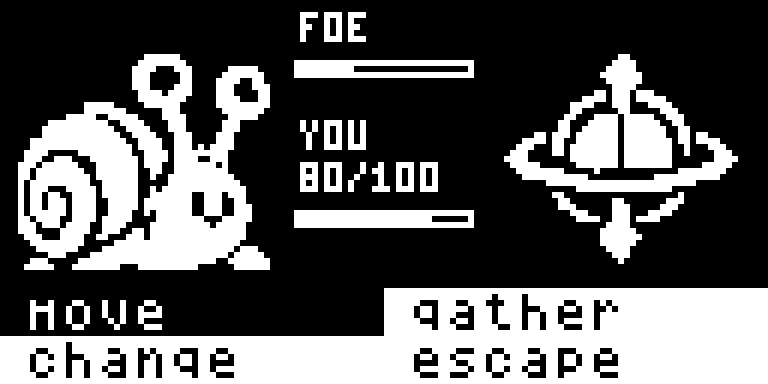
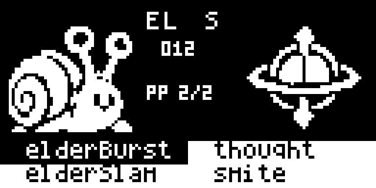
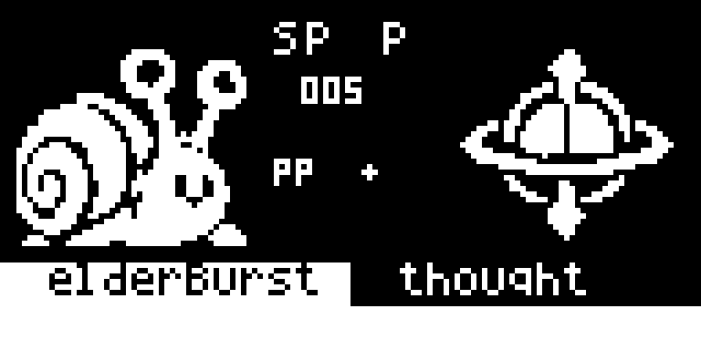
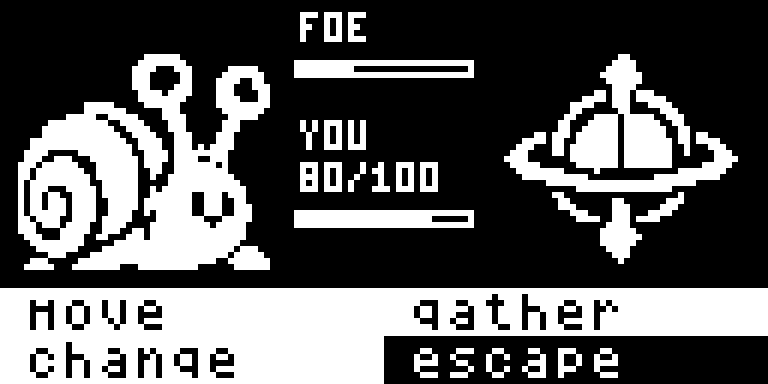

Actual 128×64 device framebuffer captures. Opponent and player use native 48×48 front/back sprites. The center labels FOE with a health bar and YOU with current/max HP, or shows selected move details; the bottom holds four choices.




Shipping firmware: 27,678 bytes flash and 1,787 bytes static RAM. Device render average: 6.370 ms, within the 19.23 ms frame budget. Stack test: 420 bytes headroom (previously 423).
This is the default battle layout: make battle-test BATTLE_TEST_EXPANSION=1 ARDENS=/path/to/Ardens. Existing battle feedback temporarily overlays the bottom eight sprite rows.